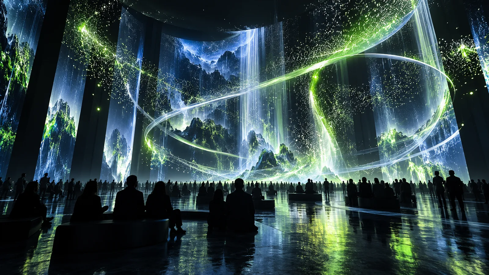

Choosing immersive technology for a live event
Projection, LED, interactive sensors, AR and spatial audio each solve a different experience problem.

Projection, LED, interactive sensors, AR and spatial audio each solve a different experience problem. It compares projection, LED, interaction, AR and spatial audio by what each does well, what each costs to run, and how to combine them.
Start with the audience action
Choose technology after defining what visitors should feel or do. A crowd watching one shared reveal needs a different system from individuals exploring at their own pace. Write the intended audience journey in simple actions before comparing hardware.
Use projection when the surface matters
Projection can transform existing architecture, scenery and unconventional shapes without covering them permanently. It works well for large shared moments and rapid visual change. Its success depends on controlled light, suitable surfaces and clear projector positions.
Use LED when light cannot be controlled
LED displays provide strong brightness and predictable contrast in busy environments. They suit daylight, broadcast and content requiring crisp detail. Physical weight, viewing distance, pixel pitch and the visual presence of the panels must be considered from the beginning.

Add interaction only when it changes the experience
Tracking, touch and sensors can make an installation responsive, but response should be immediate and understandable. Visitors need to see the connection between action and result. Design a graceful passive state so the experience still works when nobody is interacting.
Use AR for personal layers
Augmented reality can reveal information or imagery through a visitor's phone or a dedicated device. It is useful when content benefits from individual choice. Device compatibility, onboarding, network access and the social cost of looking through a screen are part of the design.

Treat sound as spatial material
Audio directs attention, gives scale to images and connects areas of a venue. Plan loudspeaker positions, delay and sound spill alongside the visual system. A restrained spatial soundscape can often create more immersion than adding another visual effect.
Compare by throughput, not only by effect
A projection show on a facade can be watched by thousands of people at once. An LED wall serves a crowd too, and works in daylight. An interactive floor might serve a few dozen people at a time, and a VR headset one. Before choosing, estimate how many guests will pass through and how long each will stay. A beautiful one-person experience at an event with ten thousand guests becomes a queue, not a highlight.
Count the running costs
Hardware hire is only part of the cost. Interactive and personal formats need staff to explain, reset and supervise them for the whole event. Headsets and phones need charging, cleaning and spares. Projection needs darkness and a crew for alignment; LED needs rigging, power and weight checks. Ask suppliers for the operating plan as well as the equipment list, and compare them side by side.
Combine formats with a clear hierarchy
The strongest events usually have one headline moment that everyone sees together, often a projection or LED show, and smaller layers around it for guests who want to explore: an AR trail, a VR room, a HoloFan display at the entrance. Give each layer a clear job and make sure the content shares a visual language, so the event feels designed as one piece rather than a trade fair of separate gadgets. For detail on the smaller formats, see planning a VR experience, planning an AR activation and holographic fans and mesh screens.
Check accessibility and comfort
Flashing content can trigger seizures in people with photosensitive epilepsy, so keep flashes within published limits such as the WCAG guidance on flashes. VR can cause motion sickness and is not suitable for everyone, so offer an alternative. Make sure guests who cannot use a phone or headset can still enjoy the main moment. See flicker and strobe safety.
Planning an immersive project?
Share the site, audience, date and creative ambition with AKS Creative Studio.
Start a conversation ↗